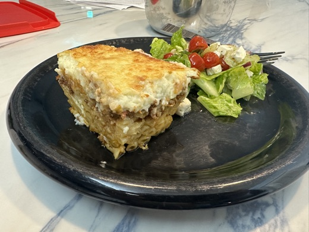

Recipes
Each guide is tested, refined, and built for zero-guesswork execution.

Recipe No. 001 — Greek
Pastitsio
The Greek answer to lasagna — layers of bucatini pasta, cinnamon-spiced meat sauce, and a golden béchamel crust. Six phases, thirteen steps, zero guesswork.
Recipe No. 002 — Southern / Cajun
Shrimp & Grits
Creamy stone-ground grits topped with seared shrimp, andouille, bacon, and a bright pan sauce. Four phases, ten steps, restaurant results at home.

Pantry Staple — Cajun
Salt-Free Cajun Seasoning
A bold, smoky, versatile spice blend with zero sodium — so you control the salt, not the seasoning. Five minutes to make, months of use.
More recipes in development — stay tuned.